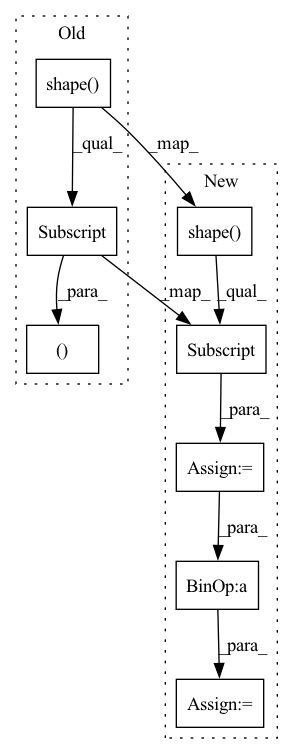

Pattern ID :33527

Before Change
def rand_translation(x, ratio=(1, 8)):
B, H, W = tf.shape(x)[0], tf.shape(x)[1], tf.shape(x)[2]
translation_x = tf.random.uniform([B, 1], -(W * ratio[0] // ratio[1]), (W * ratio[0] // ratio[1]) + 1, dtype=tf.int32)
translation_y = tf.random.uniform([B, 1], -(H * ratio[0] // ratio[1]), (H * ratio[0] // ratio[1]) + 1, dtype=tf.int32)
grid_x = tf.clip_by_value(tf.expand_dims(tf.range(W, dtype=tf.int32), 0) + translation_x + 1, 0, W + 1)
grid_y = tf.clip_by_value(tf.expand_dims(tf.range(H, dtype=tf.int32), 0) + translation_y + 1, 0, H + 1)
After Change
def rand_translation(x, ratio=0.125):
batch_size = tf.shape(x)[0]
image_size = tf.shape(x)[1:3]
shift = tf.cast(tf.cast(image_size, tf.float32) * ratio + 0.5, tf.int32)
translation_x = tf.random.uniform([batch_size, 1], -shift[0], shift[0] + 1, dtype=tf.int32)
translation_y = tf.random.uniform([batch_size, 1], -shift[1], shift[1] + 1, dtype=tf.int32)
grid_x = tf.clip_by_value(tf.expand_dims(tf.range(image_size[0], dtype=tf.int32), 0) + translation_x + 1, 0, image_size[0] + 1)
In pattern: SUPERPATTERN
Frequency: 3
Non-data size: 8
Instances
Fragment ID: 96558387
Project Name: mit-han-lab/data-efficient-gans
Commit Name: 96d6d871bf47d8dd3d280b77a5c3a01c674a7acd
Time: 2020-07-01
Author: zsyzzsoft@gmail.com
File Name: DiffAugment-stylegan2/DiffAugment_tf.py
M Class Name: AnonimousClass
N Class Name: AnonimousClass
M Method Name: rand_translation(2)
N Method Name: rand_translation(2)
M Parent Class:
N Parent Class:
M File Name: DiffAugment-stylegan2/DiffAugment_tf.py
N File Name: DiffAugment-stylegan2/DiffAugment_tf.py
M Start Line: 41
M End Line: 47
N Start Line: 41
N End Line: 49
'>
Before Change
// TODO, use registered buffer
causal_mask = paddle.tensor.triu(paddle.ones(
(paddle.shape(input_ids)[-1], paddle.shape(input_ids)[-1])) * -1e4,
diagonal=1)
if attention_mask is not None:
After Change
// TODO, use registered buffer
length = paddle.shape(input_ids)[-1]
if cache is not None:
cache_length = paddle.shape(cache[0].k)[2]
length = length + cache_length
else:
cache_length = 0
casual_mask = self.bias[:, :, cache_length:length, :length]
'>
Fragment ID: 96558386
Project Name: paddlepaddle/paddlenlp
Commit Name: e8f8eca10134a20e98808751bb7e58eb1e9c6c9e
Time: 2022-08-28
Author: 380185688@qq.com
File Name: paddlenlp/transformers/gpt/modeling.py
M Class Name: GPTModel
N Class Name: GPTModel
M Method Name: forward(6)
N Method Name: forward(6)
M Parent Class: GPTPretrainedModel
N Parent Class: GPTPretrainedModel
M File Name: paddlenlp/transformers/gpt/modeling.py
N File Name: paddlenlp/transformers/gpt/modeling.py
M Start Line: 819
M End Line: 828
N Start Line: 832
N End Line: 847
'>
Before Change
def rand_translation(x, ratio=(1, 8)):
B, H, W = tf.shape(x)[0], tf.shape(x)[1], tf.shape(x)[2]
translation_x = tf.random.uniform([B, 1], -(W * ratio[0] // ratio[1]), (W * ratio[0] // ratio[1]) + 1, dtype=tf.int32)
translation_y = tf.random.uniform([B, 1], -(H * ratio[0] // ratio[1]), (H * ratio[0] // ratio[1]) + 1, dtype=tf.int32)
grid_x = tf.clip_by_value(tf.expand_dims(tf.range(W, dtype=tf.int32), 0) + translation_x + 1, 0, W + 1)
grid_y = tf.clip_by_value(tf.expand_dims(tf.range(H, dtype=tf.int32), 0) + translation_y + 1, 0, H + 1)
After Change
def rand_translation(x, ratio=0.125):
batch_size = tf.shape(x)[0]
image_size = tf.shape(x)[1:3]
shift = tf.cast(tf.cast(image_size, tf.float32) * ratio + 0.5, tf.int32)
translation_x = tf.random.uniform([batch_size, 1], -shift[0], shift[0] + 1, dtype=tf.int32)
translation_y = tf.random.uniform([batch_size, 1], -shift[1], shift[1] + 1, dtype=tf.int32)
grid_x = tf.clip_by_value(tf.expand_dims(tf.range(image_size[0], dtype=tf.int32), 0) + translation_x + 1, 0, image_size[0] + 1)
'>
Fragment ID: 96558388
Project Name: mit-han-lab/data-efficient-gans
Commit Name: 96d6d871bf47d8dd3d280b77a5c3a01c674a7acd
Time: 2020-07-01
Author: zsyzzsoft@gmail.com
File Name: DiffAugment_tf.py
M Class Name: AnonimousClass
N Class Name: AnonimousClass
M Method Name: rand_translation(2)
N Method Name: rand_translation(2)
M Parent Class:
N Parent Class:
M File Name: DiffAugment_tf.py
N File Name: DiffAugment_tf.py
M Start Line: 41
M End Line: 47
N Start Line: 41
N End Line: 49